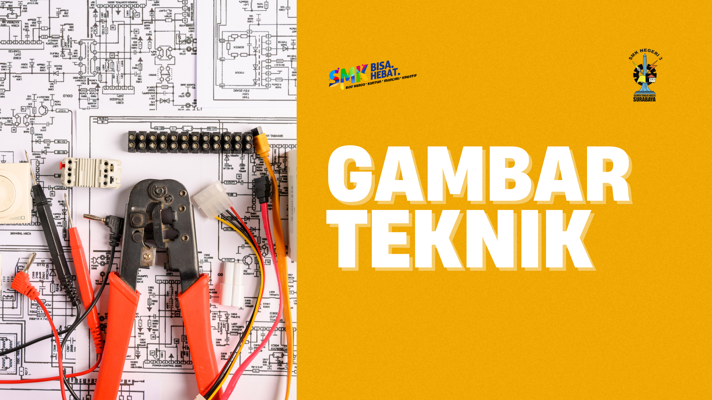
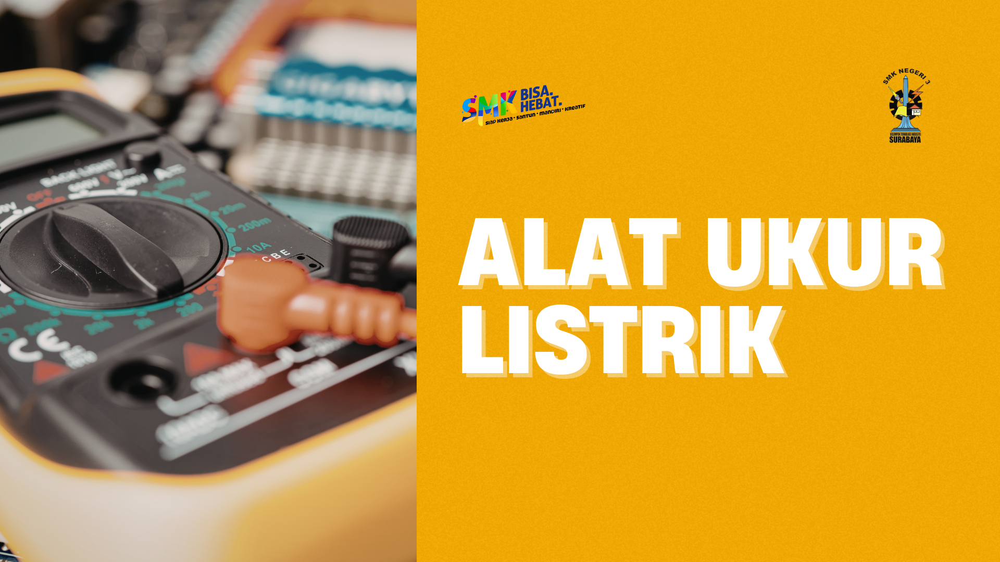
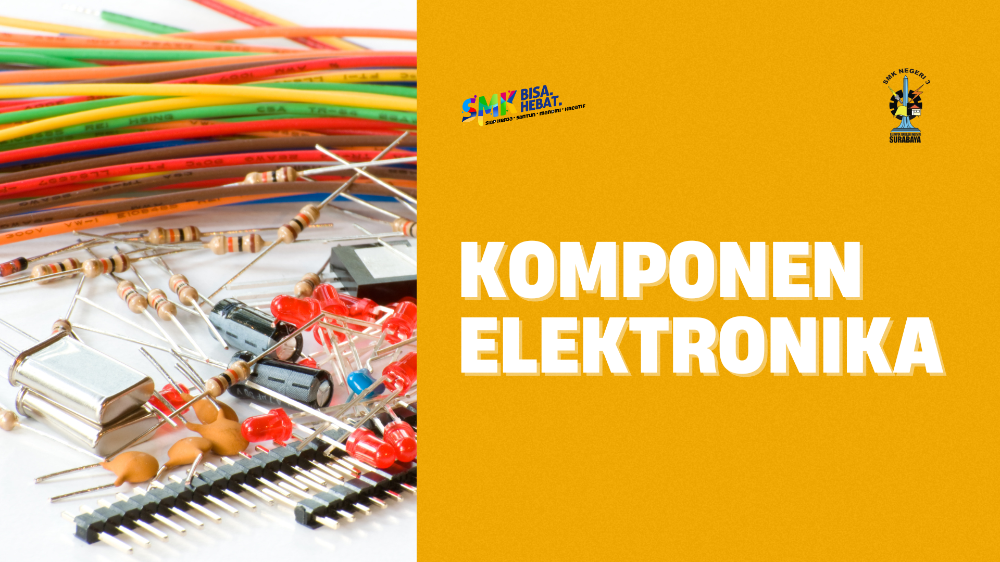
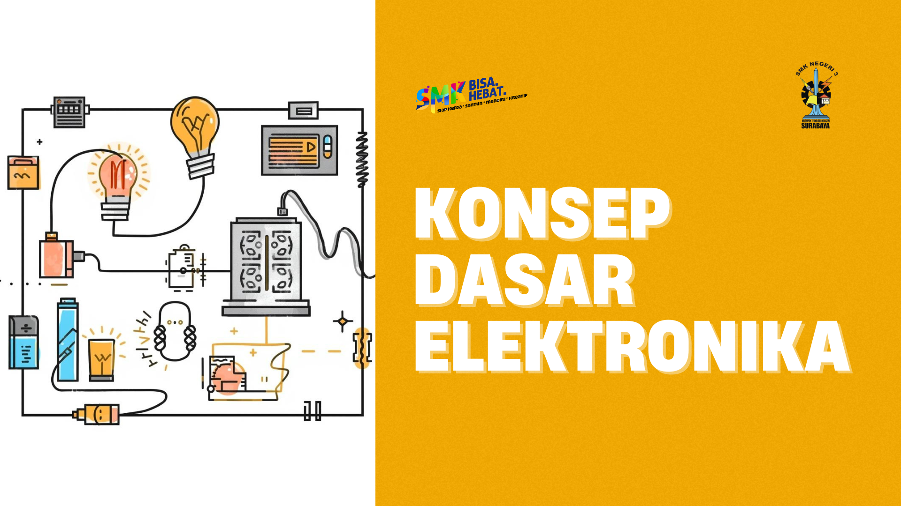
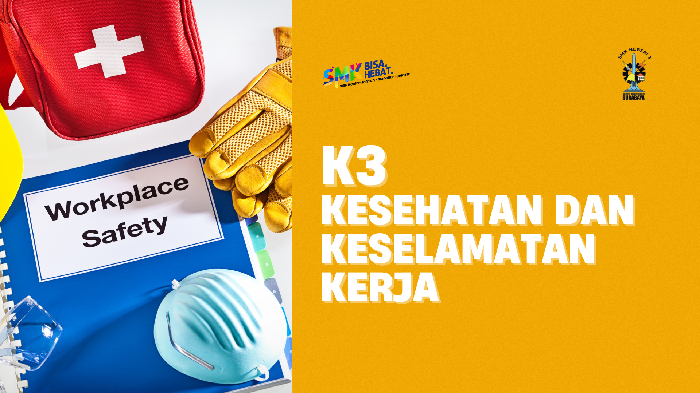
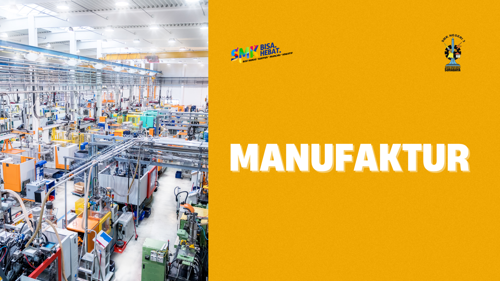

Memuat materi...
Pilih materi untuk melihat dokumen lengkap

Pengenalan macam-macam peralatan gambar, simbol komponen dan rangkaian elektronika, serta instrumentasi.

Multimeter, osiloskop, function generator, power supply, LCR meter & praktik pengukuran.

Resistor, kapasitor, dioda, transistor, IC beserta karakteristik dan fungsi.

Hukum Ohm & Kirchhoff, rangkaian seri-paralel, serta contoh rangkaian dasar.

Landasan Hukum K3, APD (Alat Pelindung Diri), Implementasi K3.

Proses manufaktur elektronika, Peralatan Manufaktur.
Dasar kewirausahaan teknologi dan Pengembangan produk elektronika.